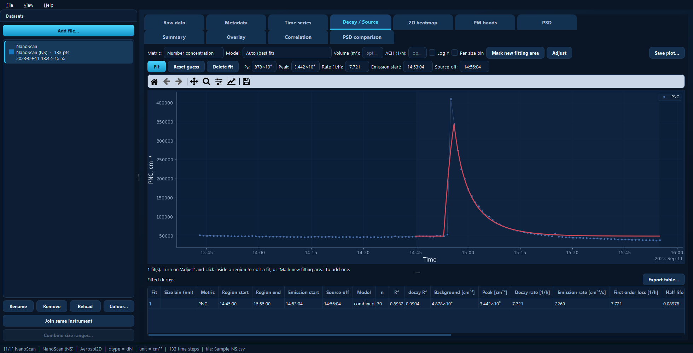

Decay / Source¶
Fits an emission-and-decay model to concentration peaks, to answer questions like how strong was the source? and how fast did the room clear? You mark a window containing a rise, a peak and a decay, and the tab fits a single-zone model to it.
{kind=link}

One fit over a sharp release: the model curve in red over the measured points, with every fitted parameter in the table below.¶
Available for: every dataset.
Fitting a decay¶
Click Mark new fitting area.
Drag across the plot over a window that spans the rise, the peak and the decay. Including the flat background before the rise helps.
The window becomes a persistent fit: a shaded region plus its fitted curve, with its parameters loaded into the fields above the plot and a row added to the table. You can mark several decays on one plot — each is fitted separately and saved with the project.
Metric and model¶
Metric chooses what is fitted — number concentration by default, or any other quantity the instrument provides.
Model chooses the loss kinetics:
Model |
Losses behave as |
Typically |
|---|---|---|
Zeroth order |
constant, independent of concentration |
a fixed extraction rate |
First order |
proportional to concentration |
air exchange and deposition |
Second order |
proportional to concentration² |
coagulation |
Combined |
first + second order together |
both at once |
Auto (best fit) |
all of the above, best one chosen |
when you are not sure |
Auto favours the simpler model when the fit quality is comparable, which avoids reading physics into a marginal improvement.
Turning a rate into a source strength¶
Volume (m³) — the chamber or room volume. Given it, the fitted emission rate becomes a source strength (emission rate × volume) and a total emitted amount, which is usually the number you actually want.
ACH (1/h) — an independently known air exchange rate. Given it, the wall-loss/deposition rate is reported as the fitted first-order loss minus this value, separating removal by ventilation from removal onto surfaces.
Both are optional; leave them blank to get the raw fitted rates.
Adjusting a fit by hand¶
An automatic fit is a starting point. Adjust turns the mouse into a fit editor:
Click inside a region to select that fit — its handles appear and its parameters load into the fields.
Drag the handles, or scroll over the plot, to change the decay rate.
Click outside the region, or press Esc, to deselect.
Toggle Adjust off to go back to zooming and panning.
The fields above the plot can also be typed into directly:
Field |
Meaning |
|---|---|
P₀ |
Background concentration. Held fixed during fitting. |
Peak |
Concentration at source-off. Held fixed during fitting. |
Rate (1/h) |
First-order-equivalent loss rate. |
Emission start |
When the source started — |
Source-off |
When the source stopped, at the peak — or drag the red line. |
Then:
Fit optimises the loss kinetics from the current guess. The background, peak and timing you set are held fixed — this is what makes manual adjustment meaningful.
Reset guess discards your manual values and re-fits automatically.
Delete fit removes the selected fit and its region.
Tip
If a fit looks wrong, the timing is the usual culprit. Drag the green (emission start) and red (source-off) lines onto the real rise and peak, then press Fit again.
Per size bin¶
Per size bin repeats the fit for every size bin over the same windows and timing, adding a row per bin to the table. This shows whether small and large particles decayed at the same rate — they often do not, since deposition is size-dependent. Bins fitting poorly (R² < 0.5) are flagged and excluded.
Log Y log-scales the concentration axis, which usually makes an exponential decay easier to judge by eye.
The results table¶
One row per fit (plus one per size bin, if enabled), with the region and timing, the model used, the number of points, R² for the whole curve and for the decay part alone, and the fitted background, peak, decay rate, emission rate, first-order loss and half-life.
Export table… writes it to Excel or CSV; Save plot… exports the figure.
Under the hood¶
import aerosoltools as at
data = at.load_ns_file("measurement.csv")
result = data.fit_decay(
period=("2023-09-11 14:45", "2023-09-11 15:55"),
metric="PNC",
model="auto", # the Model drop-down
volume=20.0, # Volume (m³)
)